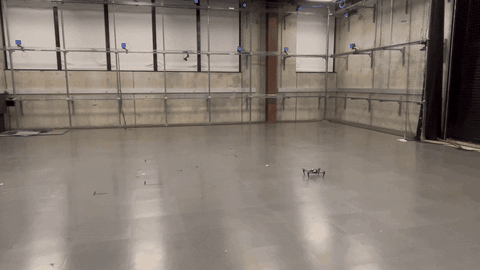
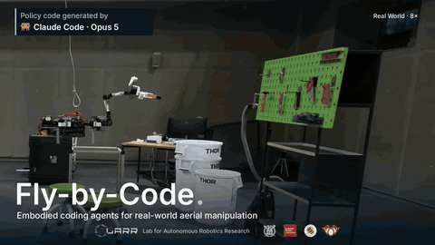
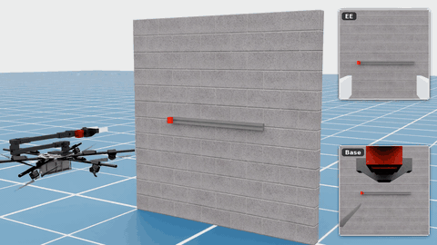
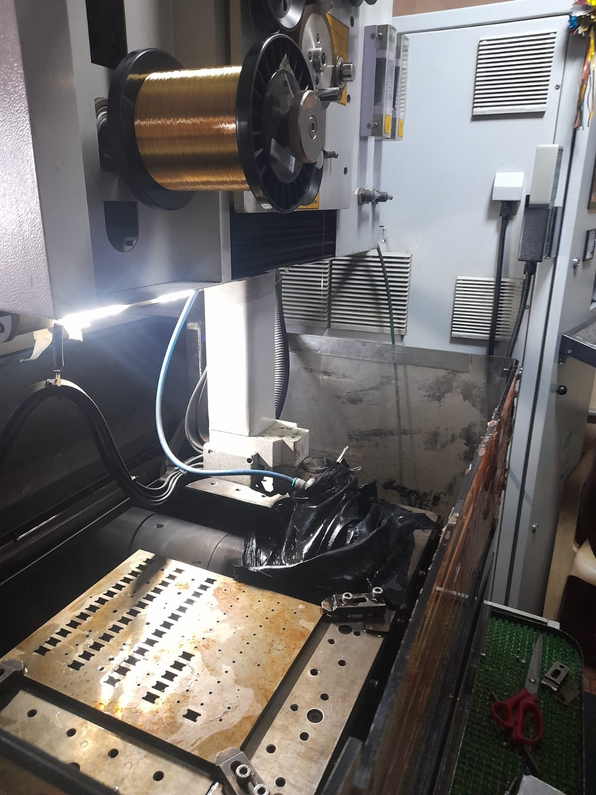
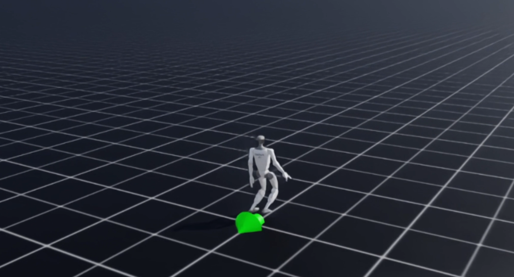
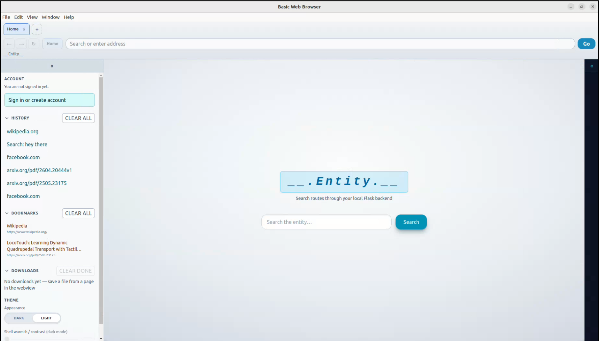
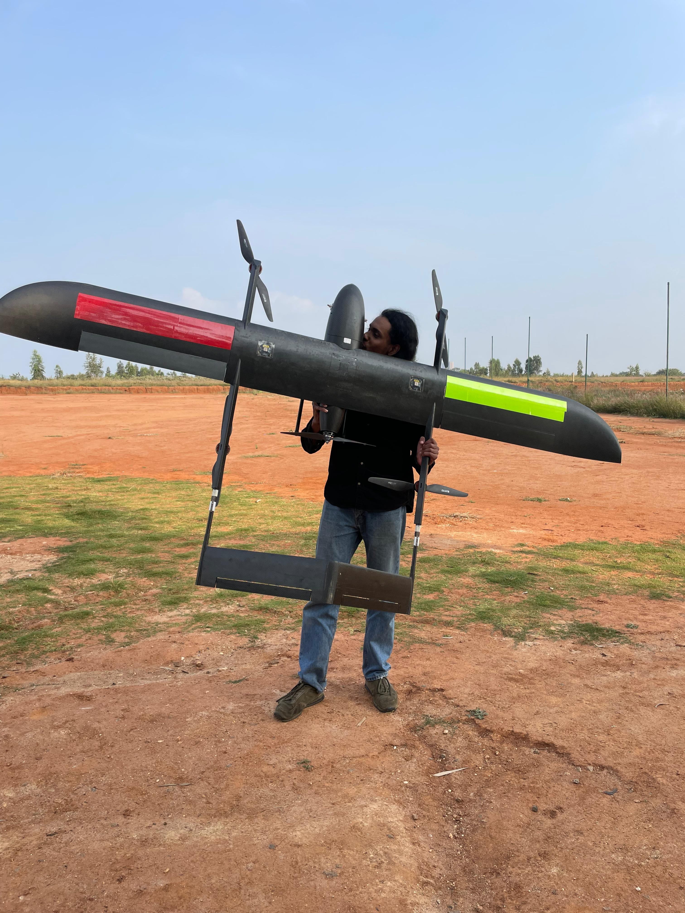
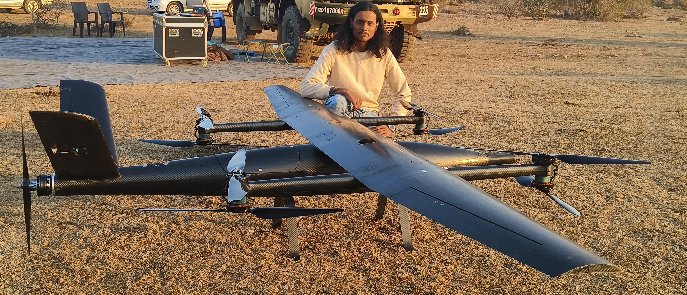

|
Bavin Saravanan I’m a Master’s student in Mechanical Engineering at Carnegie Mellon University and a research assistant at the CMU Robotics Institute, working in AirLab with Dr. Sebastian Scherer and in the Legged Systems Group with Dr. Hartmut Geyer. I focus on building intelligent autonomous systems that operate reliably in real-world environments. My work lies at the intersection of control theory and learning-based approaches, particularly reinforcement learning and multi-agent coordination, with an emphasis on safety, robustness, and decision-making under uncertainty. I’m especially interested in bridging the gap between theory and deployment, developing methods that not only perform well in simulation but can be transferred effectively to physical systems. This includes tackling challenges in autonomous navigation, system reliability, and scalable coordination among multiple agents. I hold a Bachelor's degree in Mechanical Engineering from SSN College of Engineering (Chennai, India). My foundation in robotics and control has been built through hands-on research and independent projects, shaping my approach to designing systems that are both principled and practical. |

Publications |
|
 |
Drone Soccer: Learning to Manipulate with Multicopter Downwash
Neelay Joglekar, Bavin Saravanan, Yutong Wang, Varun Kandiyappan, Junyi Geng, Sebastian Scherer IROS Workshop on Sim-to-Real and Classic Control, 2026 |
|
 |
Fly-by-Code: Embodied Coding Agents for Aerial Manipulation with Active Visual and Physical Feedback
Jeongyeon Seo, Sihyun Cho, Jaewoo Lee, Gyeongrak Choe, Yutong Wang, Bavin Saravanan, Jia-Bin Huang, Furong Huang, Sebastian Scherer, Guanya Shi, H. Jin Kim, Seungjae Lee, Dongjae Lee Under review, International Conference on Learning Representations (ICLR), 2027 |
|
 |
A Modular Simulation Suite and Benchmark for Aerial Manipulation Policy Learning
Yutong Wang, Dongjae Lee, Xiaofeng Guo, Yuanzhu Zhan, Yufei Jiang, Bavin Saravanan, Muqing Cao, Jia Xie, Chenyang Mao, Sebastian Scherer, Junyi Geng, Guanya Shi Conference on Robot Learning (CoRL), 2026 Developed AM-Bench, a modular benchmark for aerial manipulation policy learning across contact, transport, and constrained-interaction tasks, evaluating how embodiment, low-level control, disturbances, and policy design interact under multirotor dynamics. |
|
 |
Comparing Surface Characteristics of Cu-Al-Fe Alloys Using Thermal-Based Machining Processes
S. Santosh, Bavin Saravanan, T. S. Srivatsan Surface Engineering, vol. 40, no. 5, pp. 558-567, 2024 Compared EDM, powder-mixed EDM, and laser beam machining on Cu-Al-Fe shape memory alloy using SEM, AFM, and roughness profiling, identifying PMEDM as the most effective process for reducing surface roughness. |


Projects |
|
 |
General Loco-Manipulation on Unitree G1
Isaac Lab, PPO, VLM, RGB-D/LiDAR | Sept 2025 - Dec 2025 Introduction Robots that combine walking and manipulation could transform hazardous work, disaster response, warehousing, eldercare. Existing approaches require expensive data, lack interpretability, or fail to generalize. Design A three-layer modular architecture:
Evaluation Policy transferred successfully to the physical robot with consistent phase transitions. Limitation: grasping success rates dropped due to unmodeled contact dynamics. Conclusion Modular loco-manipulation is achievable without large-scale data. Next steps: domain randomization and tactile feedback to close the sim-to-real gap. |
|
 |
AiRRo - RAG-Based Search Engine
React, Flask, nomic-embed, Llama | Jan 2026 - Mar 2026 / code Introduction Search engines return links; LLMs hallucinate. This project combines both — grounded, accurate answers by anchoring LLM output to retrieved content. Design
Evaluation Outperformed keyword search on factual precision; full component swaps validated in under ten minutes. Limitation: retrieval recall drops when source coverage is sparse. Conclusion RAG effectively grounds LLM output. Reliable AI systems demand disciplined architecture, not just model selection. |

|
SimpleRL - RL Algorithms from Scratch
PyTorch, Gymnasium, MuJoCo | Jul 2025 - Aug 2025 / code Introduction Most RL practitioners use libraries as black boxes, limiting their ability to debug or adapt. This project implements 9 core RL algorithms from scratch — directly from the original papers. Design
Each is a single self-contained file, heavily commented, clarity over abstraction. Evaluation Trained and evaluated policies on benchmarks including Ant, HalfCheetah, Hopper, and BipedalWalker, for both discrete and continuous control. Conclusion Implementing from paper to code reveals gaps that using libraries never exposes. |


ExperienceResearch |
|
AirLab - CMU Robotics Institute
Research Assistant, advised by Dr. Sebastian Scherer | Nov 2025 - Present
|
|
Legged Systems Group - CMU Robotics Institute
Research Assistant, advised by Dr. Hartmut Geyer | Jan 2026 - Present
|
Professional |
|
  |
Skytex Unmanned Aerial Solutions
AI and Robotics Engineer, Bengaluru, India | Jul 2023 - Jul 2025
|


Teaching Experience |
|
ML-AI for Engineers
Teaching Assistant, Fall 2026 Support students in applying ML and AI methods to engineering problems through office hours and assignment feedback. |
|
ML-AI Project for Engineers
Teaching Assistant, Spring 2026 Mentored project teams on experiment design, model implementation, evaluation, and technical communication. |
|
Trustworthy AI
Teaching Assistant, Fall 2025 Helped students connect robustness, uncertainty, fairness, and evaluation concepts to practical ML workflows. |
|
This website is based on template at here. |